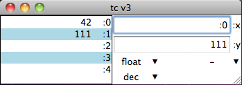

There is a saying about dog food and eating it. So after a bit I started to find my little calculator lacking. Quite severely in some places; so I gave it a redesign. Twice.
A quick person will note that this is version 3 and the previous was version 1, thus skipping version 2. There was a version 2. It had the same GUI as version 1, but it was a full out RPN. There were multiple stacks that were named. Those stacks were also little programs; letting you program the calculator. It was all very nifty by design. It was utterly worthless to use.
Version 2 was a key lesson for designing version 3.
As a programmer, the stacks are a very neat concept. For doing little quick bits of math, they interfere. The real reason for the stack though, was that your basic calculator only has one extra bit of memory. I find that too limiting. I played around and tested a few things and found that I never really used more than three or four memory cells. So version 3 has five memory cells.
The ability to write little programs for the calc was a neat idea that I never used. TadpolCalc is written in TCL, it is far easier to just add functions in TCL that any little toy language. Never mind the detail that it was a feature that never got used. Version 3 doesn’t try to have its own programming language.
Version 1 and 2 had broken fixed number modes. That bug is squished in version 3.
There were a lot of funny key collisions in version 1. Try entering a hexadecimal number in all caps. Goes ok until you get to a ‘B’. Version 3 isn’t quite as crazy about single key shortcuts.
I aslo finally figured out how to convert a floating point number into hexadecimal. I’m mildly ashamed it took me so long. IEEE defined how to do this, thus that is the way to do it. (And that one memory dump with floats in it that I needed to decode also helped push the matter.) Converting floats to hexadecimal and binary actually works in version 3.
So here is my latest version; something I find useful again. We’ll see how this one stands after a bit of time.
Oh, one thing, Control-? for help. (or on most keyboards, Control-Shift-/)
(and yes, I am in fact finding little things to fix already.)
Screenshots:

Download: